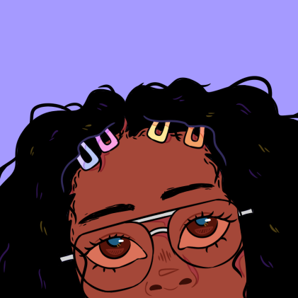

👋🏾 Hello, I'm Felecia
and I draw with code.
I'm a Frontend Web Developer (HTML, CSS and JavaScript) based in the Research Triangle area. In May 2020, I graduated from Elon University with a M.A. in Interactive Media. Prior to, I received a B.A. in Communication Studies with a minor in Spanish from UNC Greensboro.
I consider myself an artistic, creative as my approach to every project begins with an examination of my imagination with a pen and paper in hand. I believe in investing substantial time in the ideation process as it is essential for the success of any project. Along with that, I find that my other skills, such as having a strong drive to learn, being persistent and organized, has aided in my successes.
In my free time, I enjoy creating digital art, playing video games, and watching thriller films.
Feel free to email me at wilkins.fx@gmail.com or message me on LinkedIn!